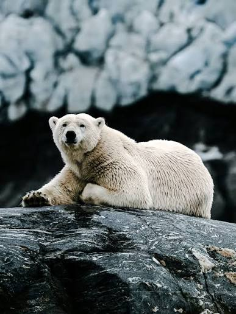
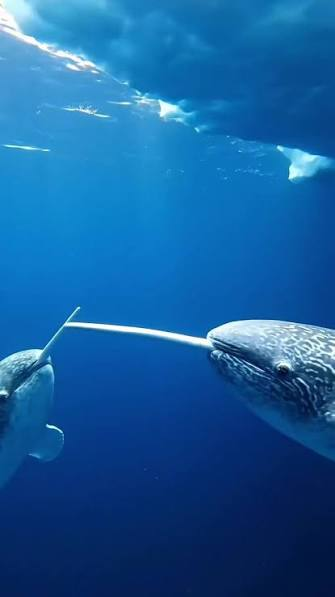
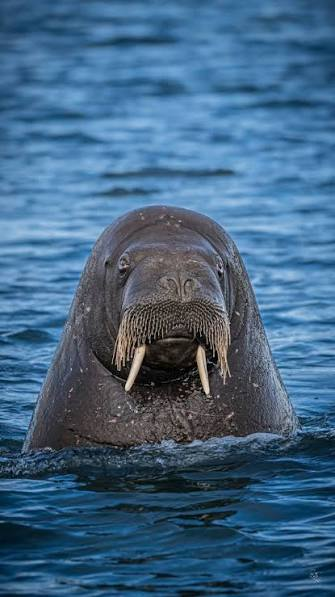
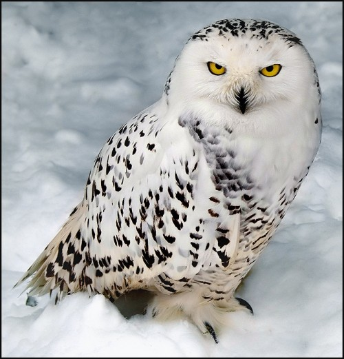
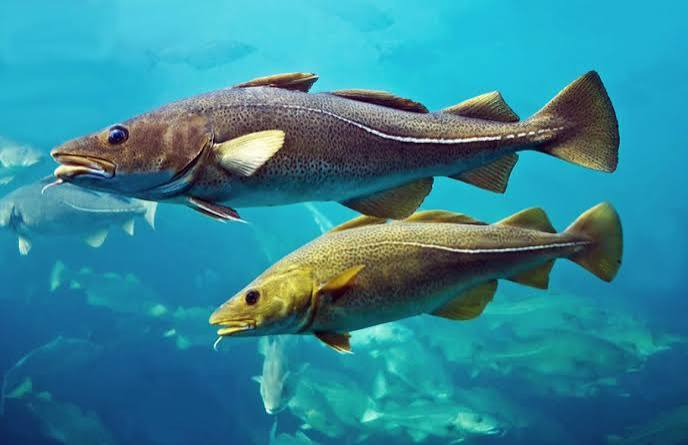
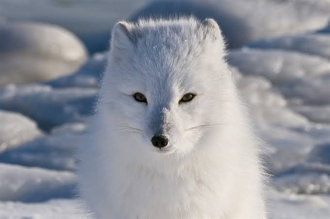

Fauna del Polo Norte
Especies representativas del ecosistema ártico y sus adaptaciones al clima extremo.

Oso Polar
Superpredador ártico. Posee una densa capa de pelaje translúcido que refleja la luz y piel negra para absorber el calor solar.

Narval
Conocido como el unicornio del mar debido al largo colmillo helicoidal que poseen los machos, el cual es en realidad un diente incisivo hipertrofiado.

Morsa
Reconocible por sus imponentes colmillos de marfil. Posee una capa de grasa de hasta 10 cm que le proporciona aislamiento en agua helada.

Búho Nival
Una de las aves rapaces más grandes del polo norte, adaptada para la caza tanto diurna como nocturna durante los días continuos del verano ártico.

Búho Nival
Los machos adultos son casi completamente blancos, mientras que las hembras presentan manchas oscuras. Se alimenta principalmente de lemmings.

Zorro Ártico
Capaz de sobrevivir a -50 °C. Su pelaje cambia de color según la estación: blanco en invierno para camuflarse en la nieve y pardo en verano.
Conclusiones
Los animales del polo norte estan en peligro de extinsión y es nuestro deber evitar su desaparición.